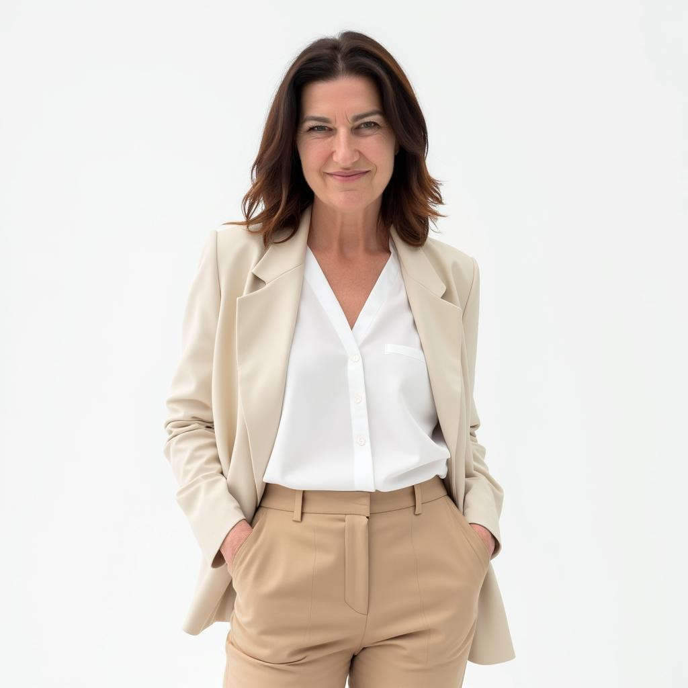

بوصلة أسلوبك المهني
اختبار DISC في 3 دقايق يوضّح لك إذا كنت المبادر، الشرارة، السند أو المهندس، وأي المهن تناسب أسلوبك.
مجاني. بدون تسجيل. نتيجتك خلال دقايق.
- Dالمبادريقرّر بسرعة ويحب النتايج
- Iالشرارةينوّر الناس والأفكار
- Sالسندهادئ، وفي، وثابت
- Cالمهندسدقيق، منطقي، ومنظّم
جاد بالموضوع؟ تخطّ الاختبار المجاني وروح مباشرة لتقرير DISC الكامل والجلسة الشخصية.
المسار السريع ←مو اختبار «أي وظيفة تناسبك» ثاني.
أكيد سويت هالاختبارات قبل. عطوك قائمة طويلة من المهن، وما عطوك سبب واحد تثق فيها.
بوصلة أسلوبك المهني تبدأ من مكان ثاني: من طريقتك الطبيعية في اتخاذ القرار، والشغل، والتعامل مع الضغط. مبنية على DISC، النموذج السلوكي اللي استخدمته مع قادة وفرق في ثلاث قارات.
أنت ما تخاف من الاختيار. أنت تخاف تختار وأنت ما تعرف نفسك.
هالسؤال يسهّر وايد طلاب:
- «لو اخترت التخصص الغلط؟»
- «لو ضيّعت ثلاث سنين من عمري؟»
- «لو الكل كان صح وأنا الغلطان؟»
فتنطر. تتصفح. تقارن نفسك بغيرك. والخوف يكبر.
التخمين مخاطرة. المعرفة أمان.
لما تفهم طريقتك الطبيعية في الشغل، توقف المقامرة. وتبدأ تختار.
في ثلاث دقايق، بتشوف:
- كيف تفكّر وكيف تقرّر
- شو اللي يحرّكك من داخل
- وين تلمع، ووين ممكن تحترق بصمت
هذا هو الفرق بين التخمين والقرار الصح.
منهج يقين (SURE)
من التخمين إلى اليقين، في أربع خطوات.
يتّضح أسلوبك
سوِّ اختبار بوصلة أسلوبك المهني المجاني، 12 سؤال. ثلاث دقايق، وما في جواب غلط.
قوّتك ودوافعك تبان
شوف مزيج أسلوبك في رسم واضح، وبعدين تعمّق أكثر مع ملف DISC الكامل.
يبان لك وين تلمع مهنيًا
تقرير التعمّق يوضح لك المهن وبيئات العمل اللي تناسب أسلوبك.
نخطّط خطواتك الجاية
جلسة شخصية تحوّل النتايج لخطوات تقدر تبدأ فيها هالأسبوع، وكلمات تستخدمها مع أهلك.
قلقانين من اختيار ولدكم أو بنتكم؟ هم بعد قلقانين.
ولدكم أو بنتكم يخافون يخذلونكم بقدر ما يخافون من الاختيار الغلط. وايد من حوارات العائلة عن المستقبل توقف بين اللي يتمناه الأهل واللي يحسّه الطالب. وجود خبيرة محايدة معاكم يغيّر هالشي.
- اسمعوا كيف يفكّر ولدكم أو بنتكم ويشتغل ويقرّر بطبيعته
- تكلّموا بصراحة عن آمالكم، وعن آمالهم
- اتفقوا على خطوات جاية الكل مقتنع فيها
جلسة العائلة
جلسة أونلاين مدتها 50 دقيقة معاكم ومع ولدكم أو بنتكم، بعد تقرير DISC. أشرح لكم أسلوبهم، ووين تلتقي آمالكم مع نقاط قوتهم، والخطوات الجاية اللي تتفقون عليها مع بعض. بالعربي أو الإنجليزي.
عندك تقريرك الكامل من قبل؟ حوّله لخطوات عملية مع جلسة شخصية.
احجز جلستك ←
هلا، أنا إيلدي.
عشرين سنة وأنا أساعد الناس يمرّون بتغييرات كبيرة ومخيفة. والحين أساعد الطلاب يختارون بثقة. صريحة. عملية. ودودة. وأكيد بتضحك مرة على الأقل.
وبعد أنا محاضِرة زائرة في جامعة أبوظبي، حرم العين، وأشارك فيها كخبيرة من سوق العمل.
وين قدت التغيير
هني في الإمارات حول العالم


قصص حقيقية، وقرارات حقيقية.
«إحساس مريح وايد إني ما أحتاج أخمّن.»
«أخيرًا في أحد يفهمني.»
«أبا أوري هذا لأهلي.»
وقّف التخمين. وابدأ من نفسك.
اعرف إذا كنت المبادر، الشرارة، السند أو المهندس، وشو يعني هذا لمستقبلك المهني. من التخمين إلى اليقين.
اختار الجملة اللي تشبهك أكثر شي، والجملة اللي تشبهك أقل شي.
مزيج أسلوبك
كل شريط يوضح قد إيش ظهر هذا الأسلوب في أجوبتك.
هذا مجرد طعم بسيط، مو التقييم المعتمد الكامل. التعمّق يروح أبعد بوايد.
هذي مجرد أمثلة، مو حدود: وايد ناس ينجحون برا المهن المعتادة لأسلوبهم. علامة مطلوبة بقوة تعني مهن تتوقع الإمارات والشركات العالمية تحتاج منها أكثر بوايد بحلول 2030. تقرير التعمّق يربط المهن بمزيج أسلوبك الكامل، مو بس بأسلوبك الأساسي.
- تقرير مستقبل الوظائف 2025 من المنتدى الاقتصادي العالمي: وظائف البيانات الضخمة والذكاء الاصطناعي والأمن السيبراني والطاقة المتجددة والرعاية من أسرع الوظائف نموًا.
- توقعات القوى العاملة في الإمارات 2025: قطاعا الطاقة (+33%) والتعليم (+31%) هما الأسرع نموًا في الإمارات حتى 2030، وعشان كذا مهن الطاقة المتجددة والتعليم عليها هالعلامة.
تعمّق أكثر مع بوصلة أسلوبك المهني الكاملة
نتيجتك المجانية هي البداية. التعمّق يضيف لك:
- تقرير DISC المهني الكامل، من مدربة معتمدة في DISC
- المهن وبيئات العمل اللي تناسب أسلوبك
- جلسة شخصية تحوّل النتايج لخطوات عملية
- وكل شي بالعربي أو الإنجليزي، على كيفك
التعمّق + جلسة شخصية
- تقرير DISC المهني الكامل
- جلسة شخصية تحوّل النتايج لخطوات عملية
- بالعربي أو الإنجليزي، على كيفك
349 درهم404 درهم
ادفع بأمان عن طريق Apple Pay أو البطاقة. رابط التقييم يوصلك على الإيميل مباشرة بعد الدفع.
شارك نتيجتك مع أهلك
ورّهم طريقتك الطبيعية في الشغل، عشان يصير كلامكم عن المستقبل أهدأ.
ما تحس إنها أنت؟
جاوب بطريقة مختلفة شوي وشوف شو يتغيّر. ياخذ تقريبًا ثلاث دقايق.